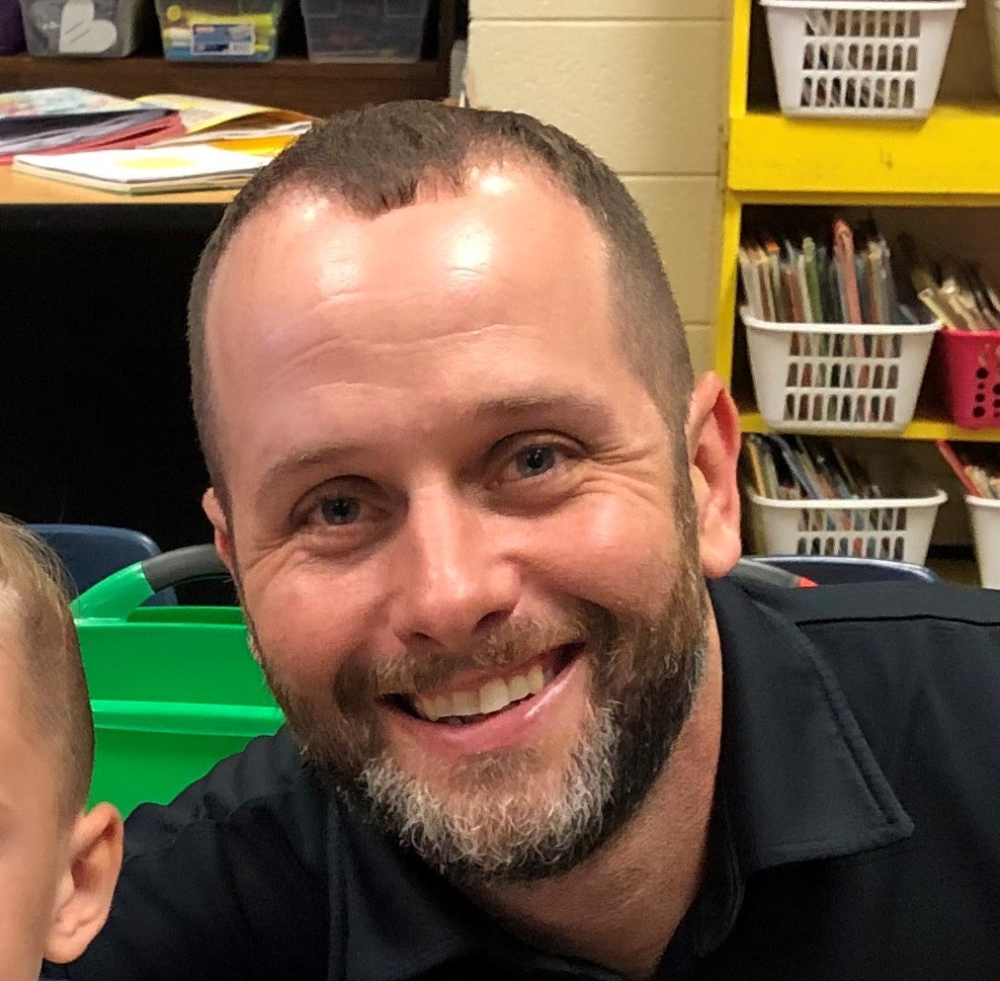

About Me
My name is Ed Dean and I am originally from Mableton, Ga. I now live in Temple, Ga with my wife Becky and our 2 amazing kids Brooks and Greenlee. I graduated from Kennesaw State University with a Bachelor's degree GIS in 2013. I am currently the GIS Manager for Douglas County, Ga. In my spare time I enjoy spending time with my family, hunting, fishing, and woodworking.
In the past 5 years, the GIS (Geographic Information Systems) profession has moved from printed maps to Web Mapping. ESRI, our software provider, provides plenty out of the box web mapping solutions but if you want to customize an application you have to hire a developer. I would like to aquire the skills during this bootcamp to be able to develope our applications in house. But if another job opportunity presents inself in the future I am not oppose to a career change. :)